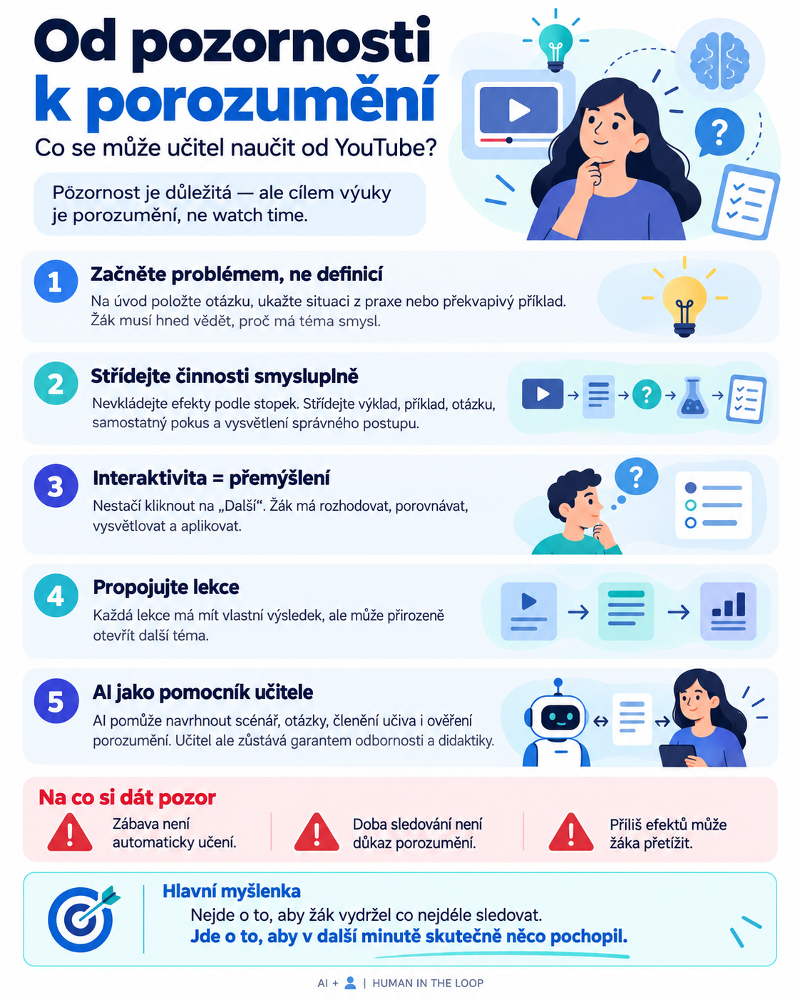

Na sociálních sítích se objevují celé sbírky AI promptů, které slibují téměř zázračné výsledky: vyšší sledovanost, více kliknutí, delší pozornost diváků a rychlejší růst YouTube kanálů.
Za těmito marketingovými sliby se ale skrývá zajímavá otázka.
Pokud tvůrci internetových videí věnují tolik úsilí tomu, aby jejich publikum zůstalo pozorné, neměli bychom se některými jejich postupy inspirovat také ve vzdělávání?
Odpověď zní ano. Ovšem s jednou zásadní podmínkou: cílem učitele není udržet žáka co nejdéle před obrazovkou. Cílem je, aby žák pochopil učivo, dokázal ho použít a něco si zapamatoval.
A právě tady začíná být celá problematika zajímavá.
1. YouTube bojuje o sledovanost. Učitel o porozumění.
Algoritmy video platforem pracují s ukazateli, jako je míra prokliků, délka sledování nebo okamžiky, kdy diváci přestávají video sledovat.
YouTube například ve svých analytických nástrojích samostatně vyhodnocuje, kolik diváků zůstane u videa po prvních třiceti sekundách.
Pro tvůrce obsahu je to důležitá informace. Pokud diváci odcházejí hned na začátku, možná je úvod nezaujal nebo video nenaplnilo očekávání vytvořené titulkem.
Ve vzdělávání ale máme jiná měřítka.
Žák může sledovat desetiminutové video od začátku do konce, a přesto si z něj téměř nic neodnést. Stejně tak může po dvou minutách video zastavit, přemýšlet nad problémem a naučit se mnohem více.
Doba sledování není důkazem učení. A zaujetí není automaticky porozumění.
To ovšem neznamená, že bychom měli pozornost žáků ignorovat. Naopak. Pozornost je důležitým předpokladem učení, nikoliv jeho konečným výsledkem.
2. Prvních třicet sekund: nezačínejme definicí, ale problémem
Mnoho výukových prezentací začíná velmi podobně.
Název tématu. Vzdělávací cíl. Definice. Další definice.
Z hlediska organizace výuky na tom není nic špatného. Jenže žák často ještě netuší, proč by ho mělo téma zajímat.
Marketingoví tvůrci používají takzvaný hook – úvodní podnět, který vzbudí zvědavost.
Ve škole ho můžeme nahradit problémovou otázkou, překvapivou situací nebo příkladem z běžného života.
Příklad z občanské nauky
Namísto úvodního snímku s názvem Mediální gramotnost se na obrazovce objeví otázka:
„Tuto zprávu sdílelo 30 000 lidí. Znamená to, že je pravdivá?“
Žáci dostanou chvíli na rozhodnutí. Teprve potom začíná vysvětlení, proč popularita informace není důkazem její pravdivosti.
Nevynechali jsme vzdělávací cíl. Pouze jsme k němu vytvořili přirozenou cestu.
Zásadní rozdíl je v tom, že ve výuce musí úvodní otázka skutečně souviset s následujícím obsahem. Klamavý titulek může krátkodobě přilákat diváka, ale pro vzdělávání je kontraproduktivní.
3. Změna každých patnáct sekund? Raději smysluplný rytmus
Jeden z populárních AI promptů doporučuje vkládat do videí vizuální změny každých patnáct sekund, aby divák neztratil pozornost.
Taková univerzální rada je pro vzdělávání problematická.
Představme si žáka, který se snaží pochopit elektrický obvod, matematický postup nebo nový gramatický jev. Pokud mu každých patnáct sekund změníme obraz, přidáme animaci a pustíme další efekt, nemusíme mu pomoci. Můžeme ho naopak přetížit.
Výzkum multimediálního učení dlouhodobě upozorňuje na význam kognitivní zátěže a rozdělování složitějšího obsahu do zvládnutelných částí.
Z toho vyplývá praktičtější pravidlo:
Neměňme obraz podle stopek. Měňme způsob práce ve chvíli, kdy to pomáhá porozumění.
Ve výukovém videu se proto mohou přirozeně střídat:
- Stručné vysvětlení nového pojmu.
- Názorný příklad nebo animace.
- Krátká otázka k zamyšlení.
- Samostatný pokus o řešení.
- Vysvětlení správného postupu.
Mezi jednotlivými kroky může být i několik sekund ticha.
Ticho totiž nemusí znamenat ztrátu pozornosti. Někdy právě tehdy žák přemýšlí.
4. Interaktivita není tlačítko. Je to přemýšlení.
Moderní digitální výuka bývá označována jako interaktivní už tehdy, když obsahuje několik klikacích prvků.
Jenže kliknutí na tlačítko „Další“ není samo o sobě vzdělávací aktivitou.
Opravdová interaktivita začíná ve chvíli, kdy žák musí něco rozhodnout, porovnat, vysvětlit nebo aplikovat.
Představme si například výukové video o rozpoznávání manipulativních informací.
Video se v určitém okamžiku zastaví a žák dostane otázku:
„Který údaj bys potřeboval ověřit, než zprávu pošleš dál?“
Teprve po odpovědi se zobrazí další část s vysvětlením.
Výukový obsah tak není jen sledem obrazů, ale posloupností drobných myšlenkových úkolů.
Podobně mohou fungovat interaktivní prezentace, digitální pracovní listy nebo příběhové vzdělávací aplikace.
Smyslem není přidat co nejvíce aktivit. Smyslem je vytvořit příležitosti, při kterých žák aktivně pracuje s učivem.
5. Každá lekce může otevřít dveře k další
YouTube tvůrci často budují série propojených videí. Závěr jednoho videa přirozeně odkazuje na pokračování.
V marketingu tím sledují další sledovanost.
Ve vzdělávání můžeme využít podobný princip, ale s jiným cílem: vytvářet souvislosti mezi poznatky.
Například lekce o mediální gramotnosti může skončit otázkou:
„Už víme, jak ověřit informaci. Ale proč někdy věříme nepravdivým zprávám, i když máme důkazy, že jsou nepravdivé?“
Následující lekce se pak může věnovat předsudkům, emocím nebo psychologii rozhodování.
Žák získává představu, že jednotlivá témata nejsou izolovanými kapitolami učebnice, ale součástmi širšího celku.
Důležité však je, aby každá lekce měla vlastní uzavřený vzdělávací výsledek. Pokračování nesmí nahrazovat vysvětlení, které mělo zaznít už v aktuální lekci.
Od pozornosti k porozumění: pět principů v jedné infografice

6. Co s tím dokáže umělá inteligence?
Právě zde se otevírá zajímavá možnost využití generativní AI.
Učitel už nemusí připravovat každou variantu scénáře, každou otázku a každou vizuální návaznost ručně.
AI může převzít roli pomocníka při návrhu výukového obsahu.
Například může:
- Z odborného textu navrhnout scénář krátkého výukového videa.
- Vytvořit úvodní otázku založenou na praktickém problému.
- Rozdělit složitější učivo na logické celky.
- Doporučit místa, kde je vhodné zařadit otázku nebo zastavit video.
- Připravit různé úrovně obtížnosti otázek.
- Navrhnout závěrečné ověření porozumění.
- Vytvořit návaznost na další téma nebo lekci.
Důležitá je ale kvalita zadání.
Pokud AI jednoduše požádáme, aby vytvořila „poutavé výukové video“, může výsledkem být efektní, ale obsahově povrchní materiál.
Mnohem lepší je zadat jí vzdělávací cíl, věkovou skupinu, úroveň žáků, požadovaný rozsah a pravidla práce se zdroji.
A především určit, že každá navržená aktivita musí mít didaktický smysl.
Praktický prompt pro učitele
Zadání pro AI:
„Pracuj jako zkušený středoškolský učitel, didaktik a scénárista vzdělávacího obsahu. Na základě mnou dodaného učiva vytvoř scénář výukového videa nebo interaktivní prezentace pro žáky střední školy.
Začni konkrétním problémem, situací z praxe nebo otázkou, která probudí zvědavost. Rozděl učivo do logických, přiměřeně dlouhých částí. Navrhni, kdy je vhodné použít obrázek, schéma, příklad nebo krátkou animaci.
Do scénáře začleň alespoň tři smysluplné příležitosti, kdy žák musí samostatně přemýšlet, rozhodovat nebo si vybavit již vysvětlené informace.
U každé aktivity uveď její vzdělávací účel. Nezařazuj zbytečné efekty ani vizuální změny pouze kvůli udržení pozornosti.
Zohledni rozdílné tempo učení, srozumitelnost instrukcí a přístupnost materiálu. Na závěr navrhni krátké ověření porozumění a přirozenou návaznost na další učivo.
Nevymýšlej odborná fakta, která nejsou doložena dodanými zdroji. Nejasnosti označ k ověření učitelem.“
Takové zadání lze využít při práci s jazykovým modelem i při přípravě podkladů pro specializované nástroje určené k tvorbě vzdělávacího obsahu.
7. Pozor na jednu zásadní past: zábava není vzdělávací výsledek
Převzetí marketingových principů do školy má také svá rizika.
Především bychom neměli zaměňovat atraktivitu materiálu za jeho kvalitu.
Video s výraznou grafikou, rychlými přechody, dramatickým hlasem a neustálými otázkami může působit moderně, ale nemusí žákům poskytovat potřebný prostor k porozumění.
Navíc ne všichni žáci potřebují stejnou míru stimulace.
Principy Universal Design for Learning (UDL) upozorňují na rozdílné potřeby žáků, význam srozumitelných cílů, možnosti volby i omezení rušivých podnětů.
Při tvorbě digitálních materiálů proto mysleme také na čitelné titulky, přiměřené tempo, jasné instrukce, možnost pozastavení nebo opakování a dostupnost obsahu i bez zbytečných vizuálních efektů.
Důležité je rovněž ověřovat, zda se žáci skutečně něco naučili. Nestačí sledovat, kolik minut u videa strávili nebo kolikrát klikli.
Mnohem cennější informaci získáme, když dokážou vysvětlit pojem vlastními slovy, vyřešit nový problém nebo si důležitou informaci vybavit v následující hodině.
8. Budoucnost výukových materiálů: méně pasivního sledování, více aktivního učení
Generativní AI nám dává nástroje, díky nimž můžeme relativně rychle vytvářet obsah, který by ještě před několika lety vyžadoval spolupráci scénáristy, grafika, programátora a metodika.
To ale samo o sobě kvalitnější výuku nezaručuje.
Rozhodující není, kolik obrázků, animací nebo interaktivních prvků dokážeme vytvořit.
Rozhodující je, zda všechny tyto prvky společně pomáhají žákovi dosáhnout vzdělávacího cíle.
Možná si tedy od úspěšných tvůrců YouTube můžeme odnést jednu důležitou myšlenku: na způsobu, jakým informace předáváme, skutečně záleží.
Ale zatímco profesionální tvůrce videí se ptá, jak diváka přimět, aby sledoval další minutu, učitel by si měl klást poněkud jinou otázku:
„Co mohu udělat, aby žák v následující minutě skutečně něco pochopil?“
A právě v tomto rozdílu leží hranice mezi optimalizací sledovanosti a smysluplným využitím AI ve vzdělávání.
Použité zdroje a další čtení
- YouTube Help – Measure key moments for audience retention – vysvětlení ukazatelů sledovanosti a analýzy pozornosti diváků.
- Mayer & Pilegard – Principles for Managing Essential Processing in Multimedia Learning – principy rozdělování multimediálního obsahu a kognitivní zátěže.
- CAST – Universal Design for Learning Guidelines 3.0 – doporučení pro přístupnost, zapojení žáků a snižování překážek v učení.
AI + 👤 | HUMAN IN THE LOOP
Umělá inteligence pomáhá s tvorbou a strukturováním obsahu. Za odbornou správnost, pedagogickou vhodnost a konečnou podobu výukových materiálů odpovídá člověk.